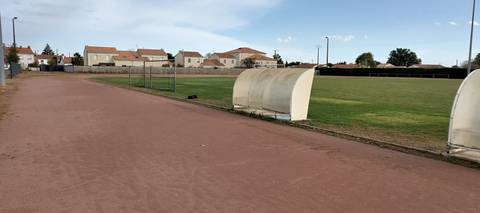
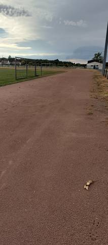

{kind=link}
{kind=link}
J'aime beaucoup cette piste, même si elle n'a rien d'exceptionnel : un vrai tour de 400 m en cendrée autour du terrain de football, en accès libre, et c'est déjà beaucoup pour une commune de cette taille. Je n'ai pas mesuré le tour, mais que ce soit un 400 m ne fait aucun doute. En revanche il n'y a aucun agrès — ni sautoir, ni aire de lancer — et pas la moindre ligne de couloir sur l'anneau. Pour du footing et du fractionné, elle fait très bien le travail, et la cendrée reste douce aux jambes ; pour du travail de vitesse en couloir ou des concours, il faut aller ailleurs.
Stade Municipal
La Grande Noë, 44118 La Chevrolière · Loire-Atlantique
Stade Municipal est un équipement d'athlétisme situé à La Chevrolière (Loire-Atlantique), en Pays de la Loire. Il dispose d'une piste en cendrée / stabilisé. Le recensement du ministère la classe « piste isolée » : elle n'appartient pas à un stade d'athlétisme. L'accès est libre.
Photos


Il manque sûrement une photo
Les sautoirs et les aires de lancer sont ce que la donnée publique décrit le plus mal, et ce qu'on photographie le moins. Un gros plan du sol, une perche bâchée, un bac de sable envahi : chacun ajoute ce qu'aucun champ ne porte.
Envoyer une photoSans compte GitHubPiste
- Revêtement
- Cendrée / stabilisé
- Développement
- 400 m — estimé d'après OpenStreetMap, non mesuré sur place
- Type de piste
- Piste isolée
- Configuration
- Plein air
- Mise en service
- 1955
Accès & services
- Accès libre
- Oui
- Éclairage
- Non
- Vestiaires
- Non
- Douches
- Non
- Sanitaires
- Oui
Visite du 24 août 2026 en fin de journée : accès libre confirmé, on entre sans rien franchir, conformément à ce que déclare le recensement. Aucun panneau d'horaires ni de règlement n'a été vu.
Avis des athlètes
Visite sur place le 24 août 2026, en fin de journée. Revêtement confirmé au sol : cendrée, un stabilisé rouge-brun sur tout l'anneau — pas d'enrobé, pas de synthétique. L'anneau ceinture un terrain de football en herbe entretenu, bordé d'abris de touche ; des mâts d'éclairage sont en place et le bourg touche l'enceinte. Le développement n'est pas renseigné au recensement. Le contributeur le donne pour 400 m sans l'avoir mesuré, et OpenStreetMap corrobore : le bord intérieur du tracé (relation/7713209) mesure 398,3 m, ce qui est la corde d'un 400 m, son bord extérieur 455,0 m. Deux convergences ne font pas une mesure : le chiffre est écrit en développement probable, et une mesure au décamètre en couloir 1, à 30 cm de la corde, l'effacera le jour où elle sera faite. Aucune ligne de couloir n'est tracée, nulle part sur l'anneau : le champ « couloirs » reste vide plutôt que renseigné à une valeur inventée. Aucun agrès d'athlétisme n'a été repéré le jour de la visite — ni sautoir en longueur, en hauteur ou à la perche, ni aire de lancer, ni rivière de steeple. Le champ « agrès » reste donc vide lui aussi : c'est un anneau de course autour d'un terrain de football, et rien de plus. À ne pas confondre avec les deux autres pistes de la commune. Le Complexe Sportif Hugues Martin (I440410002) est un second anneau, en bitume, à cinquante mètres d'ici, autour du city-stade. Et une troisième piste, non recensée, se trouve rue de Villegaie à environ 700 m — voir la fiche « Piste de La Chevrolière », visitée le 25 août 2026 : un tracé rectangulaire de trois couloirs derrière une barrière fermée, sans agrès, sans intérêt pour l'athlétisme.
Autres sites du département
- Complexe Sportif Hugues Martin
- Piste de La Chevrolière
- Stade Muriel Hurtis — Complexe des Chevrets
- Complexe sportif des Grenais
- Stade Patrick Perrais
- Complexe Sportif de Bellestre
Signaler une erreur ou compléter la fiche
Réf. I440410001 · Source : Data ES + communauté — Data ES, ministère chargé des Sports, Licence Ouverte 2.0. Les données sont déclaratives et peuvent être incomplètes : vérifiez les conditions d'accès avant de vous déplacer.